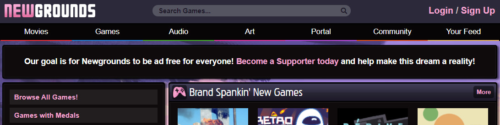
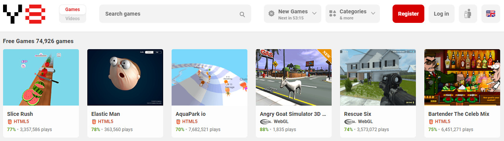
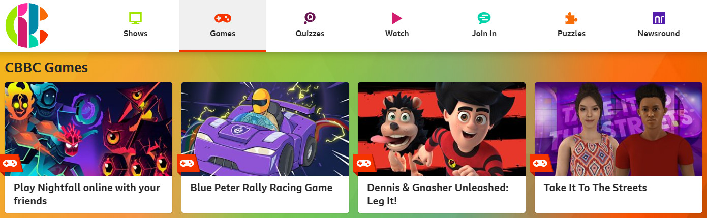
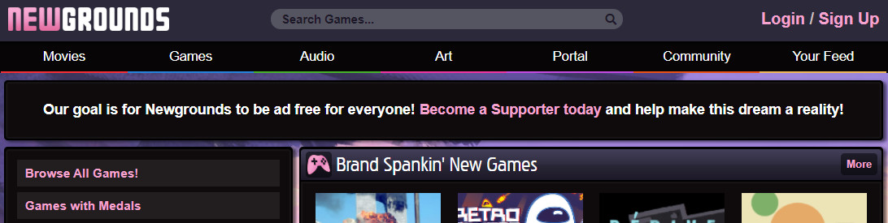
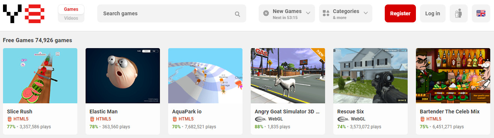
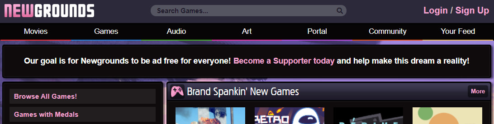
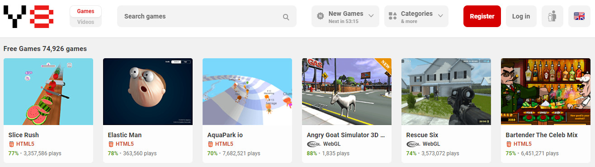
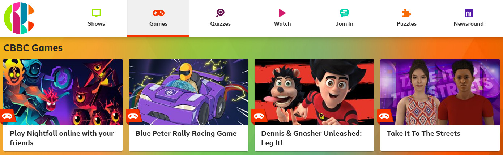
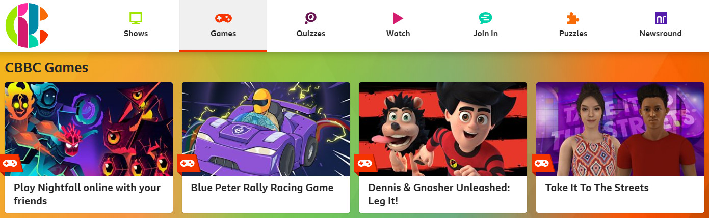

# The browser can do what now?! Presented by PlayCanvas <img src="files/playcanvas-logo-280x280.png" alt="logo" width="128"/>
## About me * Steven Yau ([@yaustar](https://twitter.com/yaustar)) * PlayCanvas Support Engineer at Snap Inc * Past Experience * Consoles @EA * Browsers @Playfish * Mobile @King * XR and Slots mixed in between 😬 Note: Hi! Thank you for coming. My name is Steven and I'm a PlayCanvas Support Engineer at Snap, which means that I'm the first line support to our game development partners. This can range from helping with certain features of the engine, best practises and help with optimising their game for the platform. Eg Load times, frame rates etc, scene layouts. My background is a more of a traditional gameplay programmer, I've worked on console at EA with the Harry Potter movie titles, facebook games at Playfish (if you ever got an unwanted FB notification spam from Resturant City or Sims Social, I'm really sorry) and mobile at King. With this presentation, I would like to show what the browser is capable of as a 'platform' and some of the oppotunities that it can provide even if the web is not your main target. Some of it will be known to you already but I hope to show at least one new thing to everyone. 😁
What is PlayCanvas
## More demos [https://github.com/playcanvas/awesome-playcanvas](https://github.com/playcanvas/awesome-playcanvas)
The browser can do what now?
via GIPHY
## What can we do now? Notes: So what can we do now?
Game Portals
 

## Visualisation
## Interactive ads
## Messenger platforms
KaiOS
* Based on Firefox OS - A Web based OS * 100 million devices across 100 countries (May 2019) * 500+ apps on the KaiStore (April 2020) * As little as $17! <a href="https://www.theverge.com/2019/7/22/20703872/whatsapp-kaios-nokia-8110-jio-phone-feature-phones" target="_blank"><img src="files/nokia kaios verge.jpg" width=400/></a> <aside class="notes"> KaiOS is an interesting platform. Feature phone that gives the user ability to use WhatsApp, Twitter, Facebook, YouTube in a relatively cheap package. All the apps are HTML5 based and we have seen some PlayCanvas users consider publishing to the store. They had around 4-5% market share in India in 2018-2019 but that has dropped since. Google have recently announced that they are working with Jio (telecoms provider) to develop cheap smart phones so it be interesting to see how that all pans out. </aside>
## What's coming next Note: What is getting me excited about the next year or so.
## Hoping for WebGL2 support on iOS 14 * Instancing * Non POT texture support for filtering, wrapping, and mipmapping * Other performance optimisations Note: This will give us feature parity between iOS and Android and really take advantage of the graphics capability on iPhones. Even with WebGL 1, it's really good so I'm really hoping for this to happen
## WASM * Faster performance * More languages can be used * Rust * C and C++ * Haxe * _etc_ Note: WebAssembly is a binary instruction format for a virtual mahcine in the browser. Aka, it's fast and is a portable compile targe for other languages such as Rust and C. WASM is not new in itself but more and more projects are taking advantage of it are increasing. We are using it for our Basis compression library and physics (Bullet). The downside, is that the binaries can be relatively large. Basis adds about 200K to the download size which doesn't seem much, that's bigger than our engine.
## WebXR
## WebGPU * Higher performance * Compute Note: This isn't my domain but excited for it all the same, especially with WebXR AR experiences. With compute, that means heavy image processing is a possiblity which can lead to some interesting AR applications.
## What to consider when making browser games * Web as a platform * Load times * Stickiness * Multi-platform and multi-device 😞
## PlayCanvas Demo Note: Open up Keepy Up as it’s small enough to digest quickly and covers some major feature sets. Quick run through the Editor. Fork. Change the logo. Make the ball easier to hit by exposing the tap radius and tweaking it live to get it to ‘feel’ right. Publish and share URL link. Show package size
## Upcoming features for PlayCanvas * Templates * Basis texture support * Animations state graph controller * JSON attributes * Shader node edtior * User editor extension support
## Other frameworks to consider * Three.js, Babylon.js * Pixi.js, Phaser
via GIPHY
## Questions Note: Please grab me if you interested in trying out PlayCanvas and/or would like a more in depth chat on features and suitability! I can sort out a trial coupon or setup a call to talk through needs :)
  
 
 
